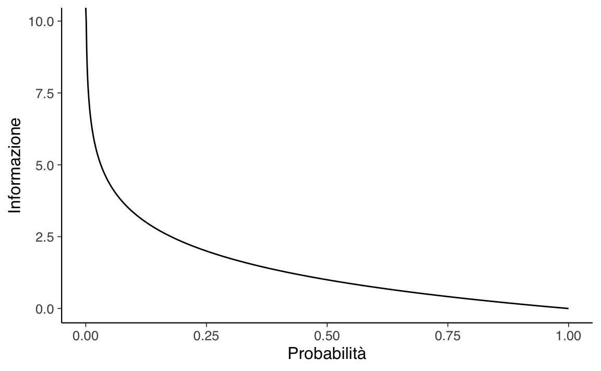

35 Entropia
Il principio base del metodo scientifico è la replicabilità delle osservazioni: le osservazioni che non possono essere replicate sono poco interessanti. Parallelamente, una caratteristica fondamentale di un modello scientifico è la generalizzabilità: se un modello è capace di descrivere soltanto le proprietà di uno specifico campione di osservazioni, allora è poco utile. Ma come è possibile valutare la generalizzabilità di un modello statistico? Questa è la domanda a cui cercheremo di rispondere in questa parte della dispensa. In questo Capitolo inizieremo questa discussione introducendo il concetto di entropia.
35.1 La generalizzabilità dei modelli
Secondo Johnson et al. (2022), nel valutare un modello, il ricercatore deve porsi tre domande critiche.
Quali conseguenze più ampie derivano dall’inferenza? Come e chi ha raccolto i dati? Colui che svolge la ricerca otterrebbe di benefici manipolando i dati (escludendo delle osservazioni; selezionando il campione)? Che impatto hanno inferenze che vengono tratte dai dati sugli individui e sulla società? Quali pregiudizi o strutture di potere possono essere coinvolti in questa analisi?
Che tipo di distorsioni sistematiche potrebbero essere presenti nell’analisi statistica? Ricordiamo la famosa citazione di George Box: “Tutti i modelli sono sbagliati, ma alcuni sono utili”. È dunque importante sapere quanto è sbagliato il modello. Le assunzioni che stanno alla base del modello sono ragionevoli? Il meccanismo generatore dei dati che è stato ipotizzato è adeguato per il fenomeno in esame?
Quanto è accurato il modello? Quanto sono lontane dalla realtà le previsioni del modello?
Per approfondire questi temi, si rinvia al testo di Johnson et al. (2022). Qui ci concentreremo su uno dei temi critici relativa alla validità di un modello, ovvero sul tema della generalizzabilità del modello.
Nella scienza l’utilità di una teoria viene verificata esaminando la corrispondenza tra predizioni teoriche e osservazioni. Se vi sono discrepanze significative tra predizioni e osservazioni ciò suggerisce che la teoria, o nella nostra visione più ristretta, il modello statistico, è poco utile. Il problema della capacità predittiva del modello non riguarda soltanto l’adeguatezza del modello in riferimento ad uno specifico campione di dati, ma riguarda anche la capacità di un modello statistico sviluppato in un campione di dati di ben adattarsi ad altri campioni della stessa popolazione.
In generale, i modelli statistici tendono a non generalizzarsi bene a un nuovo campione; questo perché sfruttano le caratteristiche specifiche dei dati del campione e tendono a produrre risultati eccessivamente ottimistici (cioè le dimensioni dell’effetto) che sovrastimano la dimensione dell’effetto atteso sia nella popolazione che in nuovi campioni. Benché i problemi della generalizzabilità dei modelli e il metodo chiave per valutarli – ovvero, la convalida incrociata (cross-validation) – siano stati discussi sin dagli esordi della letteratura psicometrica (Lord, 1950), tali temi sono stati sottovalutati nella formazione psicologica contemporanea e nella ricerca. Tuttavia, questi concetti diventeranno sempre più importanti considerata l’enfasi corrente sulla necessità di condurre ricerche replicabili. Un’introduzione a questi temi è fornita, da esempio, da Song et al. (2021). Nello specifico, Song et al. (2021) mostrano che un modello che viene adattato a un campione (campione di calibrazione) non si generalizza bene a un altro campione (campione di convalida): la capacità predittiva del modello è minore quando il modello viene applicato al campione di convalida piuttosto che al campione di calibrazione. Questo problema è detto sovra-adattamento (overfitting). In generale, Song et al. (2021) mostrano come la capacità di generalizzazione del modello diminuisce (a) all’aumentare della complessità del modello, (b) al diminuire dell’ampiezza del campione di calibrazione, e (c) al diminuire della dimensione dell’effetto nella popolazione.
Sebbene i modelli statistici producono comunemente un sovra-adattamento, è anche possibile che essi producano un sotto-adattamento (underfitting) dei dati. Tale mancanza di adattamento è dovuta dalla variabilità campionaria e dalla complessità del modello. Il sotto-adattamento porta ad un \(R^2\) basso e ad un MSE alto, sia nei campioni di calibrazione che in quelli di convalida. Per questo motivo, la scarsa generalizzabilità del modello può essere dovuta sia al sovra-adattamento che al sotto-adattamento del modello.
Per aumentarne la capacità di generalizzazione del modello devono essere soddisfatte tre condizioni: (a) campioni di calibrazione grandi, (b) dimensioni dell’effetto non piccole nella popolazione, e (c) modelli che non siano inutilmente complessi. Tuttavia, nella ricerca psicologica queste tre condizioni sono difficili da soddisfare: l’aumento della dimensione del campione spesso richiede l’utilizzo di maggiori risorse, la dimensione di un dato effetto nella popolazione non è soggetta alla discrezione dei ricercatori e la complessità del modello è spesso guidata da motivazioni teoriche. Pertanto, negli studi psicologici la generalizzabilità dei modelli è spesso problematica. Ciò rende necessario che il ricercatore fornisca informazioni aggiuntive relative alla capacità del modello di generalizzarsi a nuovi campioni. L’obiettivo di questa parte della dispensa è di descrivere come questo possa essere fatto utilizzando l’approccio bayesiano.
35.2 Capacità predittiva
Nel framework bayesiano il problema della generalizzabilità di un modello viene affrontato valutando la capacità predittiva del modello, laddove per capacità predittiva si intende la capacità di un modello, i cui parametri sono stati stimati usando le informazioni di un campione, di ben adattarsi ad un campione di osservazioni future. In questo Capitolo cercheremo di rispondere a tre domande.
- Quali criteri consentono di valutare la capacità predittiva di un modello?
- Come quantificare la capacità predittiva di un modello usando solo un campione di osservazioni?
- Come confrontare le capacità predittive di modelli diversi?
35.3 Il rasoio di Ockham
Il problema di scegliere il modello più adatto a spiegare un fenomeno di interesse è uno dei più importanti problemi in campo scientifico. I ricercatori si chiedono: il modello è completo? È necessario aggiungere un nuovo parametro al modello? Come può essere migliorato il modello? Se ci sono modelli diversi, qual’è il modello migliore?
Per rispondere a queste domande è possibile usare il rasoio di Ockham: frustra fit per plura quod potest fieri per pauciora (“si fa inutilmente con molte cose ciò che si può fare con poche cose”). Parafrasando la massima si potrebbe dire: se due modelli descrivono i dati egualmente bene, viene sempre preferito il modello più semplice. Questo è il principio che sta alla base della ricerca scientifica.
Il rasoio di Ockham, però, non consente sempre di scegliere tra modelli alternativi. Se due modelli fanno le stesse predizioni ma differiscono in termini di complessità — per esempio, relativamente al numero di parametri di cui sono costituiti — allora è facile decidere: viene preferito il modello più semplice, anche perché, pragmaticamente, è il più facile da usare. Tuttavia, in generale, i modelli differiscono sia per complessità (ovvero, per il numero di parametri) che per accuratezza (ovvero, per la grandezza degli errori di predizione). In tali circostanze il rasoio di Ockham non è sufficiente: non consente infatti di trovare un equilibrio tra accuratezza e semplicità.
In questo Capitolo ci chiederemo come sia possibile misurare l’accuratezza predittiva di un modello. Ciò ci consentirà, in seguito, di usare il rasoio di Ockham: a parità di accuratezza, sarà possibile scegliere il modello più semplice. Ma nella pratica scientifica non si sacrifica mai l’accuratezza per la semplicità: il criterio prioritario è sempre l’accuratezza.
35.3.1 Sovra-adattamento e sotto-adattamento
Secondo McElreath (2020), la selezione tra modelli deve evitare due opposti errori: il sovra-adattamento e il sotto-adattamento. Tale problema va sotto il nome di bias-variance trade-off: il sotto-adattamento, infatti, porta a distorsioni (bias) nella stima dei parametri, mentre il sovra-adattamento porta a previsioni scadenti in campioni futuri. Spesso l’incertezza relativa alla scelta del modello (sotto-adattamento versus sovra-adattamento) passa inosservata ma il suo impatto può essere drammatico. Secondo Hoeting et al. (1999), “Standard statistical practice ignores model uncertainty. Data analysts typically select a model from some class of models and then proceed as if the selected model had generated the data. This approach ignores the uncertainty in model selection, leading to over-confident inferences and decisions that are more risky than one thinks they are.
In questo Capitolo esamineremo alcune tecniche bayesiane che possono essere utilizzate per operare una selezione tra modelli alternativi, tenendo sotto controllo i pericoli del sovra-adattamento e del sotto-adattamento. In particolare, ci chiederemo quale, tra due o più modelli, sia quello da preferire in base al criterio della capacità predittiva.
35.3.2 Stargazing
Nella pratica concreta della ricerca, il metodo più comune per la selezione tra modelli alternativi utilizza i test di ipotesi statistiche di stampo frequentista. Questo metodo viene chiamato stargazing, poiché richiede soltanto l’esame degli asterischi (\(**\)) che si trovano nell’output di un software statistico (gli asterischi marcano i coefficienti del modello che sono “statisticamente significativi”): alcuni ricercatori ritengono che il modello con più stelline sia anche il modello migliore. Questo però non è vero. Al di là dei problemi legati ai test dell’ipotesi nulla, è sicuramente un errore usare i test di significatività per la selezione di modelli: i valori-p non consentono di trovare un equilibrio tra underfitting e overfitting. Infatti, le variabili che migliorano la capacità predittiva di un modello non sono sempre statisticamente significative; d’altra parte, le variabili statisticamente significative non sempre migliorano la capacità predittiva di un modello.
Quando ci chiediamo quale, tra modelli alternativi, è il modello che meglio rappresenta il “vero” processo di generazione dei dati, ci troviamo di fronte al problema di quantificare il grado di “vicinanza” di un modello al “vero” processo di generazione dei dati. Si noti che, in tale confronto, facciamo riferimento sia alla famiglia distributiva così come ai valori dei parametri. Ad esempio, il modello \(y_i \sim \mathcal{N}(5, 3)\) è diverso dal modello \(y_i \sim \mathcal{N}(5, 6)\), ed è anche diverso dal modello \(y_i \sim \Gamma(2, 2)\). I primi due modelli appartengono alla stessa famiglia distributiva ma differiscono nei termini dei valori dei parametri; gli ultimi due modelli appartengono a famiglie distributive diverse (gaussiano vs. Gamma). Per misurare il grado di “vicinanza” tra due modelli, \(\mathcal{M}_1\) e \(\mathcal{M}_2\), la metrica di gran lunga più popolare è la divergenza di Kullback-Leibler. Per chiarire questo concetto è però prima necessario introdurre la nozione di entropia.
35.4 La misura del disordine
Se vogliamo ottenere una comprensione intuitiva del concetto di entropia1 possiamo pensare a quant’è informativa una distribuzione. Maggiore è l’entropia di una distribuzione, meno informativa sarà quella distribuzione e più uniformemente verranno assegnate le probabilità agli eventi. In altri termini, ottenere la risposta di “42” è più informativo della risposta “42 \(\pm\) 5”, che a sua volta è più informativo della risposta “un numero qualsiasi”. L’entropia quantifica questa osservazione qualitativa.
Il concetto di entropia si applica sia alle distribuzioni continue sia a quelle discrete, ma è più facile da capire usando le distribuzioni discrete. Negli esempi successivi vedremo alcuni esempi applicati al caso discreto, ma gli stessi concetti si applicano al caso continuo.
35.4.1 Entropia di un singolo evento
Il concetto di entropia può essere usato per descrivere la quantità di informazione fornita da un evento. L’intuizione che sta alla base del concetto di entropia è che l’informazione fornita da un evento descrive la sorpresa suscitata dall’evento: gli eventi rari (a bassa probabilità) sono più sorprendenti – e quindi forniscono più informazione – degli eventi comuni (ad alta probabilità). In altre parole,
- un evento a bassa probabilità è sorprendente e fornisce molta informazione;
- un evento ad alta probabilità è poco o per niente sorprendente e fornisce poca (o nessuna) informazione.
È dunque possibile quantificare l’informazione fornita dal verificarsi di un evento usando la probabilità di quell’evento. Una tale quantità di informazione è chiamata “informazione di Shannon”, “auto-informazione” o semplicemente “informazione” e, per un evento discreto \(x\), può essere calcolata come:
\[ \text{informazione}(x) = -\log_2 p(x), \]
dove \(\log_2\) è il logaritmo in base 2 e \(p(x)\) è la probabilità dell’evento \(x\).
La scelta del logaritmo in base 2 significa che l’unità di misura dell’informazione è il bit (cifre binarie). Questo può essere interpretato dicendo che l’informazione misura il numero di bit richiesti per rappresentare un evento.2 Solitamente, si denota la quantità di informazione con \(h()\):
\[ h(x) = -\log p(x). \]
Il segno negativo garantisce che il risultato sia sempre positivo o zero. L’informazione è zero quando la probabilità dell’evento è 1.0, ovvero quando l’evento è certo (assenza di sorpresa).
Consideriamo il lancio di una moneta equilibrata. La probabilità di testa (e croce) è 0.5. La quantità di informazione di ottenere “testa” è dunque
-log2(0.5)
#> [1] 1Per rappresentare questo evento abbiamo bisogno di 1 bit di informazione. Se la stessa moneta venisse lanciata \(n\) volte, la quantità di informazione necessaria per rappresentare questo evento (ovvero, questa sequenza di lanci) sarebbe pari a \(n\) bit. Se la moneta non è equilibrata e la probabilità di testa è 0.1, allora l’evento “testa” è più raro e richiede più di 3 bit di informazione:
-log2(0.1)
#> [1] 3.321928Consideriamo ora il lancio di un dado. Quanta informazione viene fornita, ad esempio, dall’evento “esce il numero 6”? Dato che la probabilità di ottenere un 6 nel lancio di un dado è più piccola della probabilità di ottenere “testa” nel lancio di una moneta, il risultato del lancio di un dado deve produrre una sorpresa maggiore del risultato del lancio di una moneta. Per cui, la quantità di informazione associata all’evento “è uscito 6”, dovrà essere maggiore di quella associata all’evento “testa”. Infatti, la quantità di informazione dell’evento “è uscito un 6” è più che doppia rispetto alla quantità di informazione dell’evento “testa”:
-log2(1/6)
#> [1] 2.584963Nella figura successiva viene esaminata la relazione tra probabilità e informazione, per valori di probabilità nell’intervallo tra 0 e 1.
p <- seq(0, 1, length.out = 1000)
h <- -log2(p)
ggplot(tibble(p, h), aes(p, h)) +
geom_line() +
labs(
x = "Probabilità",
y = "Informazione"
)
La figura mostra che questa relazione non è lineare, è infatti leggermente sublineare. Questo ha senso dato che abbiamo usato una funzione logaritmica.
35.4.2 Entropia di una variabile casuale
Possiamo estendere questa discussione pensando ad un insieme di eventi, ovvero ad una distribuzione. Nella teoria della probabilità usiamo la nozione di variabile casuale per fare riferimento ad un insieme di eventi e alle probabilità associate a tali eventi. L’entropia quantifica l’informazione che viene fornita da una variabile casuale.
Sia \(Y = y_1, \dots, y_n\) una variabile casuale e \(p_t(y)\) una distribuzione di probabilità su \(Y\). Si definisce la sua entropia (detta di Shannon) come:
\[\begin{equation} H(Y) = - \sum_{i=1}^n p_t(y_i) \cdot \log_2 p_t(y_i). (\#eq:entropy) \end{equation}\]Per interpretare la @ref(eq:entropy), consideriamo un esempio discusso da Martin et al. (2022).
Nella figura @ref(fig:entropy-example) sono rappresentate sei distribuzioni. viene anche riportato il valore di entropia di ciascuna distribuzione. La distribuzione con il picco più pronunciato o con la dispersione minore è q, e questa è la distribuzione con il valore di entropia più basso tra le sei distribuzioni considerate. Per q la distribuzione è q ~ binom(n = 10, p = 0.75); quindi ci sono 11 possibili eventi. qu ha una distribuzione uniforme sugli stessi 11 possibili eventi. L’entropia di qu è maggiore dell’entropia di q. Infatti, se calcoliamo l’entropia di distribuzioni binomiali con \(n = 10\) (con valori diversi di \(p\)) ci rendiamo conto che nessuna di tali distribuzioni ha un’entropia maggiore di qu. Dobbiamo aumentare \(n ≈ 3\) volte per trovare la prima distribuzione binomiale con entropia maggiore di qu. Passiamo alla riga successiva. Generiamo la distribuzione r spostando a destra q e normalizzando (per garantire che la somma di tutte le probabilità sia 1). Poiché r ha una dispersione maggiore di q, la sua entropia è maggiore. ru è una distribuzione uniforme con lo stesso numero di eventi possibili come r (ovvero 22) – si noti che sono stati inclusi come valori possibili anche quelli nella “valle” tra i due picchi. Ancora una volta, la distribuzione uniforme ha l’entropia più grande.
Gli esempi discussi finora sembrano suggerire che l’entropia è proporzionale alla varianza della distribuzione. Verifichiamo questa intuizione esaminiamo le ultime due distribuzioni della figura @ref(fig:entropy-example). La distribuzione s è simile a r ma presenta una separazione maggiore tra i due picchi della distribuzione – dunque, ha una varianza più grande. Ciò nonostante, l’entropia non varia. Quindi la relazione tra entropia e varianza non è così semplice come ci sembrava. Il risultato che abbiamo trovato può essere spiegato dicendo che, nel calcolo dell’entropia, non vengono considerati gli eventi con probabilità nulla (per questa ragione, nell’esempio, è stato possibile aumentare la varianza senza cambiare l’entropia). La distribuzione su è stata costruita sostituendo i due picchi in s con qu (e normalizzando). Possiamo vedere che su ha un’entropia minore di ru, anche se su ha una dispersione maggiore di ru. Questo è dovuto al fatto che su distribuisce la probabilità totale tra un numero minore di eventi (22) di ru (che ne conta 23); quindi è sensato attribuire a su un’entropia minore di ru.
Consideriamo ora un esempio riguardante le previsioni del tempo. Supponiamo che le probabilità di pioggia e sole siano, rispettivamente, \(p_1 = 0.3\) e \(p_2 = 0.7\). Quindi
\[ H(p) = − [p(y_1) \log_2 p(y_1) + p(y_2) \log_2 p(y_2)] \approx 0.61. \]
Se però viviamo a Las Vegas, allora le probabilità di pioggia e sole saranno simili a \(p(y_1) = 0.01\) e \(p(y_2) = 0.99\). In questo secondo caso, l’entropia è 0.06, ovvero, molto minore di prima. Infatti, a Las Vegas non piove quasi mai, per cui quando abbiamo imparato che, in un certo giorno, non ha piovuto, abbiamo imparato molto poco rispetto a quello che già sapevamo in precedenza.
Nell’esempio precedente abbiamo visto che, se gli esiti possibili sono pioggia o sole con \(p(y_1) = 0.7\), \(p(y_2) = 0.3\), allora l’entropia è
Ma se gli esiti possibili sono pioggia, neve o sole con \(p(y_1) = 0.7\), \(p(y_2) = 0.15\) e \(p(y_3) = 0.15\), rispettivamente, allora l’entropia cresce:
Commenti e considerazioni finali
In questo Capitolo abbiamo visto come sia possibile quantificare l’incertezza tramite l’entropia. Ma come è possibile usare l’entropia dell’informazione per specificare la “distanza” tra un modello e il vero meccanismo generatore dei dati? La risposta a questa domanda è fornita dalla divergenza di Kullback-Leibler che verrà discussa nel Capitolo @ref(ch:kl-div).
La nozione di entropia fu introdotta agli inizi del XIX secolo nel campo della termodinamica classica; il secondo principio della termodinamica è infatti basato sul concetto di entropia che, in generale, è assunto come una misura del disordine di un sistema fisico. Successivamente Boltzmann fornì una definizione statistica di entropia. Nel 1948 Shannon impiegò la nozione di entropia nell’ambito della teoria delle comunicazioni.↩︎
È possibile pensare all’entropia nei termini del numero di domande sì/no che devono essere poste per ridurre l’incertezza. Per esempio, se in un certo giorno ci può essere solo sole o pioggia, per ridurre l’incertezza, a fine giornata chiediamo: “ha piovuto?” La risposta (sì/no) ad una singola domanda elimina l’incertezza, e quindi l’informazione ottenuta (ovvero, la riduzione dell’incertezza) è uguale ad 1 bit. Se in una certa giornata ci potrebbero essere sole, pioggia o neve, per ridurre l’incertezza sono necessarie due domande: “c’era sole?”; “ha piovuto?” In questo secondo caso, l’informazione ottenuta (ovvero, la riduzione dell’incertezza) è uguale ad 2 bit. Usando un logaritmo in base 2, dunque, l’entropia può essere interpretata come il numero minimo di bit necessari per codificare la quantità di informazione nei dati.↩︎